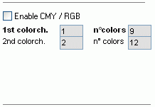
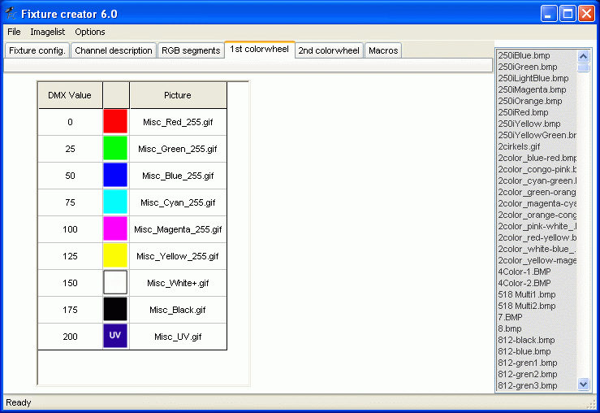
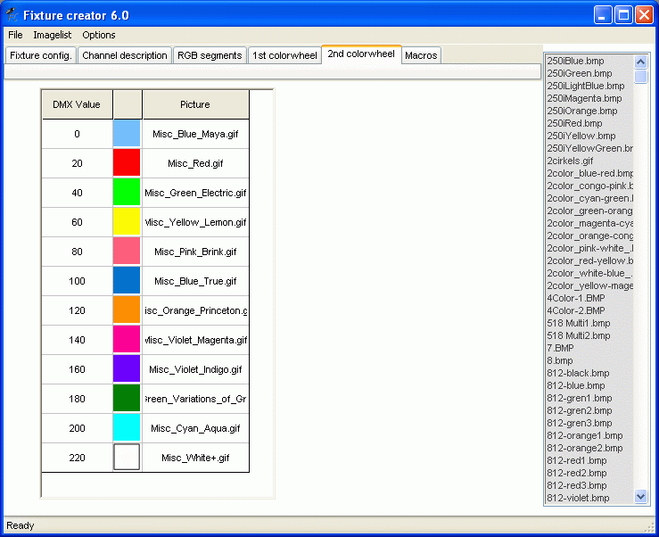
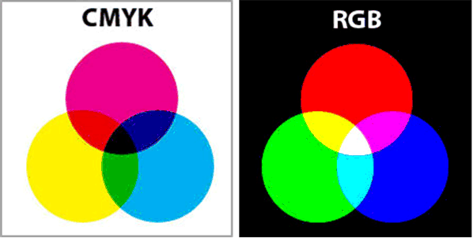
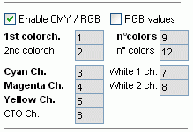
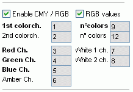
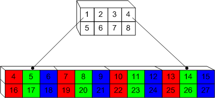
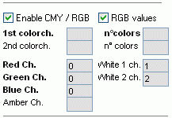
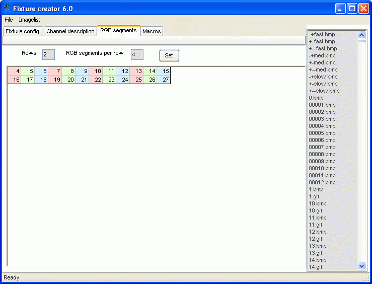

Fixture Creator - Color configuration
Configuration of Color control can be divided in 3
Color wheel
Full Color Control
RGB Segment
Many fixtures comes with color wheels and a full color control. Wash offend have a wheel for some fixed fast colors and a CMY to set an exact color shade.
Color wheel
The color wheel control consist of 2 faders and 2 sets of icons, one set for each wheel.
For both color wheels a Channel and the no of color icons are to be defined.
In this example the color wheel 1 is set to channel 1 with 9 colors and color wheel 2 is et to channel 2 with 12 colors.
At least 1 color are to be defined and max is 150.
If no channel number is entered the color wheel is not shown.

To fill in DMX values and color / icon for the color wheels go to the 1st and 2nd color wheel tabs.
For Color wheel 1, 9 values are to be entered and the related icons added.
Entering the DMX value can be done manually but if there are many then auto generator can be used. This is found under “Option”
See: Fixture Creator - Auto Generator
The values for the single color’s are normally defined in a range and not a single value.
It could be 15 to 35 for color no 2 in the table. The optimal will then be to use the middle value here 25. (15 + 35)/2 = 25.
See evt. Fixture Creator - Tutorial Middle value
Sometimes the color wheel is placed on a value between two colors. It could be a value that gives for example half red and half green at the same time.
If the icons for the color wheel are not present in the color library then they are to found on the net, by the manufacturer or elsewhere and then placed in the color folder.
An alternative could be to take some snapshots but it may be a bit difficult to get the correct shade.
See: Fixture Creator - Pictures and Icons
Take the time to do this part properly because this fixture will last for many years and the satisfaction of having a pro looking fixture will be a joy each time it is used.
After placing the icons in the Color folder “Refresh” the image list under “Imagelist”

For color wheel 2, 12 colors are defined and DMX values and icons are defined the same way as for color wheel 1.

There is a relativ new function named “Global Color”.
It is not present on the pictures above.
Global color is a set of 12 predefined colors that can be mapped in the fixture.
It is a way to link color wheels and CMY/RGB colors together so they are easy to set.
When this function in used only a reduced color palette is present in the Fixture Color control panel.
The benefit of this function is that with one click it is possible to change color on many different fixtures.
See Global Colors
{kind=link}
{kind=link}
{kind=link}
Full Color Control.
Color CMY / RGB general
A short color theory
Basically 3 primary colors are needed to generate all / true colors and it can be CMY, Cyan Magenta and Yellow, or RGB, Red, Green and Blue.
In fixtures with bulbs 3 filters, normally CMY, are gradually tuned in giving the wanted color shade. Theoretically when the 3 filters are full on no light should pass. These filters subtract the colors.
The RGB are used when a fixture has 3 light sources. This could be LED where the sources are turned more and more “on” until fully “on”. With fully on sources white light is generated so this type is an addition of colors.

{kind=link}
Full Color Control configuration.
To get full CMY or RGB color control check “on” the enable box.
The configuration then change to the image bellow where the first thing that are to be defined is if it is CMY or RGB control.


Here only the CMY is described because the RGB configuration is alike.
Compared to the color wheel configuration the additional DMX channels are C,M,Y or R,G,B and CTO or Amber channel.
CTO stands for Color Temperature Orange. This filter are used lover the color temperature so the white light from a HID bulb gets a warm tint. For RGB the name is Amber.
Her the channels are set to Cyan = 3, Magenta = 4, Yellow = 5.
The CTO filter is set to channel 6.
In this example the channels are just set 1,2,3 …. The real channel has to be found in the DMX address table for the actual fixture.
White 1 and 2 are used for controlling white LEDs if a RGB led panel is equipped with additional white LEDs
The two white channels are set to 7 and 8.
See the fixture control panel here color panel
{kind=link}
{kind=link}
RGB Segment
The color control has an extra control function special for LED fixtures
LED bar, strips, panels, many names for the same thing.
Some of these fixtures are divided into segments that can be controlled individually.
To overcome this the color configuration also consist of a tab “RGB segment”.
This makes the color control switch able so the color can be set for each segment.
In the this example a BAR with 8 segments place in 2 rows has been used.
It is a fictive BAR.
The addresses starts with 4 just to show an offset.
And the segment control continues in the 4,5,6,7…. 27 direct order. These channel are to be found in the DMX address table. Note that many of these fixtures has more modes so the mode for the fixture has to be set correct to get this working.

Configuration of the main color control are in this case not to be used on R,G,B channels so they are to be blank.

In the RGB segment tab
Rows is set to 2 and Segments per row is set to 4.
To generate this matrix press “Set”.
The addresses are then to be entered manually.

The fixture color control panel then look like this. RGB segment control panel.
{kind=link}
{kind=link}
{kind=link}